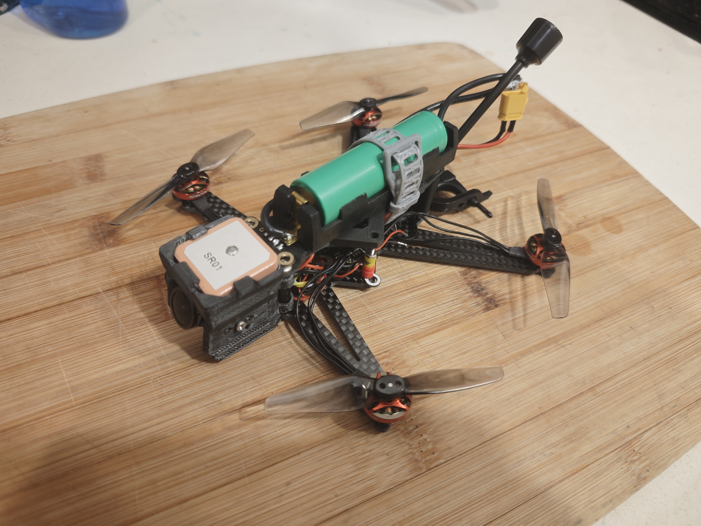
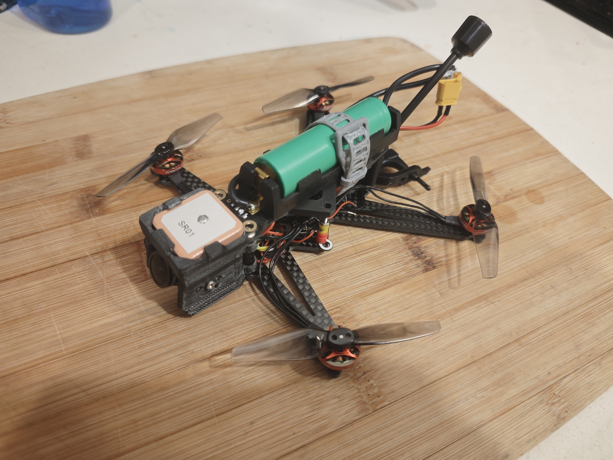

Long Range FPV Drone
I designed the frame in CAD, all 3D-printed mounting components, and validated the build through multiple design iterations. The carbon fiber frame is machined by fabrication partners. Full FPV with camera and live video.
Powered by 1–2S 18650 Li-ion, this drone achieves 15–20 minutes conservative flight time. GPS integration enables waypoint navigation and GPS-safe rescue on Betaflight, with support for Betaflight, iNav, and ArduPilot on various flight controllers.
 
